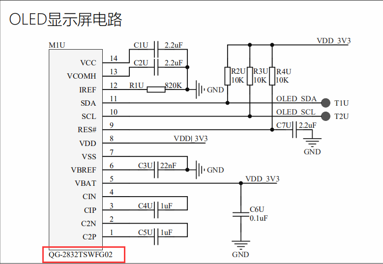

之前使用printf串口打印可以STM将STM32的数据通过串口发送到主机并显示，对于STM32上的程序调试是非常方便的，但是如果需要实时在开发板上查看传感器数据信息如温湿度等，每次都要通过串口到主机才能查看实在不方便，而在开发板上搭载一块oled屏幕，将数据显示在屏幕上不失是一个好的选择。
小熊座上搭载了一块0.91寸，分辨率128*32（每行能显示128个位数据，每列能显示32位数据）的oled屏幕，控制逻辑为IIC，并通过oled控制寄存器的特定命令操作oled屏幕将数据显示在屏幕上。
电路图：（下面为型号）

在MCU上对应的管脚为PB8和PB9，可以下载对应datasheet查看此oled屏幕的数据，以及操作方法。
对于控制逻辑为IIC的器件，对引脚OLED_SDA以及OLED_SCL的控制代码几乎是通用的：
#define OLED_SCLK_Clr() HAL_GPIO_WritePin(GPIOB,GPIO_PIN_8, GPIO_PIN_RESET);//SCL IIC接口的时钟信号
#define OLED_SCLK_Set() HAL_GPIO_WritePin(GPIOB,GPIO_PIN_8, GPIO_PIN_SET);
#define OLED_SDIN_Clr() HAL_GPIO_WritePin(GPIOB,GPIO_PIN_9, GPIO_PIN_RESET);//SDA IIC接口的数据信号
#define OLED_SDIN_Set() HAL_GPIO_WritePin(GPIOB,GPIO_PIN_9, GPIO_PIN_SET);
void IIC_Start(void)
{
OLED_SCLK_Set();
OLED_SDIN_Set();
OLED_SDIN_Clr();
OLED_SCLK_Clr();
}
void IIC_Stop(void)
{
OLED_SCLK_Set();
OLED_SDIN_Clr();
OLED_SDIN_Set();
}
void IIC_Wait_Ack(void)
{
OLED_SCLK_Set();
OLED_SCLK_Clr();
}
void Write_IIC_Byte(unsigned char IIC_Byte)
{
unsigned char i;
unsigned char m,da;
da=IIC_Byte;
OLED_SCLK_Clr();
for(i=0;i<8;i++)
{
m=da;
m=m&0x80;
if(m==0x80)
{
OLED_SDIN_Set();
}
else
OLED_SDIN_Clr();
da=da<<1;
OLED_SCLK_Set();
OLED_SCLK_Clr();
}
}
IIC协议，首先发送从机地址到IIC总线上，对于此OLED屏，只需要向其写入数据而没有读取步骤，从机地址为0x78（写入数据）

向IIC设备写入一个字节：
void Write_IIC_Command(unsigned char IIC_Command)
{
IIC_Start();
Write_IIC_Byte(0x78); //Slave address,SA0=0
IIC_Wait_Ack();
Write_IIC_Byte(0x00); //write command
IIC_Wait_Ack();
Write_IIC_Byte(IIC_Command);
IIC_Wait_Ack();
IIC_Stop();
}
void Write_IIC_Data(unsigned char IIC_Data)
{
IIC_Start();
Write_IIC_Byte(0x78); //D/C#=0; R/W#=0
IIC_Wait_Ack();
Write_IIC_Byte(0x40); //write data
IIC_Wait_Ack();
Write_IIC_Byte(IIC_Data);
IIC_Wait_Ack();
IIC_Stop();
}
void OLED_WR_Byte(unsigned dat,unsigned cmd)
{
if(cmd)
{
Write_IIC_Data(dat);
}
else
{
Write_IIC_Command(dat);
}
}
在这里，根据上面的时序图，写入数据首先发送IIC地址<<1,并置末位为0(0为写），再发送控制字节，控制字节第7位代表下一字节位数据还是命令，若下一字节为数据，则此位为1，反之为0，最后写入数据或命令。
接下来是设备的初始化：
void OLED_Inits(void)
{
HAL_Delay(200); //这里的延时很重要
OLED_WR_Byte(0xAE,OLED_CMD); //关闭显示
OLED_WR_Byte(0x00,OLED_CMD); //设置低列地址
OLED_WR_Byte(0x10,OLED_CMD); //设置高列地址
OLED_WR_Byte(0x00,OLED_CMD); //设置展示开始行即低列地址
OLED_WR_Byte(0xB0,OLED_CMD); //设置目标显示页的开始地址
OLED_WR_Byte(0x81,OLED_CMD); //设置对比度控制寄存器
OLED_WR_Byte(0xff,OLED_CMD); //最高为0xff
OLED_WR_Byte(0xa1,OLED_CMD); //段重定义设置,bit0:0,0->0;1,0->127; 0xa0左右反置 0xa1正常
OLED_WR_Byte(0xa6,OLED_CMD); //设置正常显示(设置显示方式;bit0:1,反相显示;0,正常显示 )
OLED_WR_Byte(0xa8,OLED_CMD); //设置驱动路数 设置多路复用比(1比32)
OLED_WR_Byte(0x1f,OLED_CMD); // 1/32
OLED_WR_Byte(0xc8,OLED_CMD); //设置COM输出扫描方向
OLED_WR_Byte(0xd3,OLED_CMD); //和上一条命令有关，下条命令指定显示映射的开始行到COM0->COM63中一个
OLED_WR_Byte(0x00,OLED_CMD); //COM0为0x00
OLED_WR_Byte(0xd5,OLED_CMD); //设置显示时钟分频比/振荡器频率
OLED_WR_Byte(0x80,OLED_CMD); //设置分频比，设置时钟为100帧/秒
OLED_WR_Byte(0xd9,OLED_CMD); //设置预充电周期
OLED_WR_Byte(0x1f,OLED_CMD); //设置预充1个时钟，放电15个时钟([3:0],PHASE 1;[7:4],PHASE 2;)
OLED_WR_Byte(0xda,OLED_CMD); //设置COM硬件引脚配置
OLED_WR_Byte(0x00,OLED_CMD);
OLED_WR_Byte(0xdb,OLED_CMD); //设置VCOMH 电压倍率
OLED_WR_Byte(0x40,OLED_CMD); //Set VCOM 释放电压([6:4]000,0.65*vcc;001,0.77*vcc;011,0.83*vcc;)
OLED_WR_Byte(0x8d,OLED_CMD); //设置充电泵启用/禁用
OLED_WR_Byte(0x14,OLED_CMD); //设置(0x10禁用,0x14启用)
OLED_WR_Byte(0xaf,OLED_CMD); //开启显示
}
上面这份代码是此OLED datasheet提供的标准代码
开启和关闭OLED显示：
//开启OLED显示
void OLED_Display_On(void)
{
OLED_WR_Byte(0X8D,OLED_CMD); //SET DCDC命令（设置电荷泵）
OLED_WR_Byte(0X14,OLED_CMD); //DCDC ON（开启电荷泵）
OLED_WR_Byte(0XAF,OLED_CMD); //DISPLAY ON
}
//关闭OLED显示
void OLED_Display_Off(void)
{
OLED_WR_Byte(0X8D,OLED_CMD); //SET DCDC命令
OLED_WR_Byte(0X10,OLED_CMD); //DCDC OFF（关闭电荷泵）
OLED_WR_Byte(0XAE,OLED_CMD); //DISPLAY OFF
}
这里先来了解一下OLED的显示原理，这块OLED屏幕分辨率为128*32，即每行最多显示128个位，即16个字节，每列最多显示32位，即4个字节。
在这里，显示方规则是我们自己定的，但是一旦显示规则定下来，所有ASCII字符或者汉字的规则就被定下来，OLED显示采用点阵式显示，如ASCII码字符‘A'在采用8*16显示时，这里8*16代表此字符的显示要占8个位的列，和16个位的行，显然需要16个字节才能显示，在8*16点阵显示中，字符‘A'所对应的规则即16个字节为：0x00,0x00,0xC0,0x38,0xE0,0x00,0x00,0x00,0x20,0x3C,0x23,0x02,0x02,0x27,0x38,0x20。画个图可能更清晰明了：

丑是丑了点，谁让分辨率这么低呢，唉。这就是字符‘A在OLED上8*16的显示，16个字节每个字节代表一列，从左至右，从上到下，当然这是在初始化时配置过的。后面会讲到页的水平垂直寻址等。只不过这种寻址是最常见的水平寻址（从左至右再从上至下）。
到这里，我们有了初始化函数，有了写数据函数，我们想要写入数据，直接将要写入的字节发给OLED即可，但是还有一个问题：如何让屏幕知道我们要从那里开始写呢，初始化时告诉屏幕从低列地址即最左上方开始写，但是写完第一个字节，如何再写第二个呢?
定点函数：（类似光标）
void OLED_Set_Pos(unsigned char x, unsigned char y)
{
OLED_WR_Byte(0xb0+y,OLED_CMD);
OLED_WR_Byte(((x&0xf0)>>4)|0x10,OLED_CMD);
OLED_WR_Byte((x&0x0f),OLED_CMD);
}
代码第一行意思就是将光标定位到低列地址首
接下来一句，
OLED_WR_Byte(((x&0xf0)>>4)|0x10,OLED_CMD);
x0是等于x的，可以认为是x，我们看手册的定义如下图：

我们对应表格，当发送十六进制数字00~0FH表示页寻址方式下低位的列开始地址。当发送十六进制数字10~17H代表在页寻址方式下发送高位的列开始地址，所以x坐标是被切割位地位和高位分别发送给OLED的，所以程序的语句就不难理解了，x&0xf0)>>4就是保留高4位然后移位4位，地址数据已移到了低四位，再或上0x10，就是组成10~17命令码，告诉OLED芯片这是地址寻址，高位开始的数值。
低位地址的语句：
OLED_WR_Byte((x&0x0f),OLED_CMD);
这个同高位时同样的道理，见上图发送地位地址是00~0F，高位一定是0，只要或上0x0f屏蔽掉高位，将低位地址x4,x3,x2,x1直接发给OLED即可。
高位的x2,x1,x0,加上地位的x3,x2,x1,x0一共7个位，7个位可以寻址2的7次方就是128个地址，看刚好同128列匹配了。
举一个具体实例：
OLED_WR_Byte (0xb2,0); // b2：b代表页寻址，2是第2页；
OLED_WR_Byte (0x10,0); // 10: 1代表是列高位，0代表高3位为0；
OLED_WR_Byte (0x03,0); // 03：0代表是列低位，3代表低4位为3；
连起来意思是0x03,就是第3列的意思
（以下来自datasheet，其中改正高列地址为10h)

即可以通过传入参数x，y改变光标的位置，即下一个数据写上的位置，x，就相当于坐标系的存在。
可以用此方法代替Display设置电荷泵开启和关闭屏幕：
//注意：清屏函数,清完屏,整个屏幕是黑色的!和没点亮一样!!!
void OLED_Clear(void)
{
uint8_t i,n;
for(i=0;i<8;i++)
{
OLED_WR_Byte (0xb0+i,OLED_CMD); //设置页地址（0~7）
OLED_WR_Byte (0x00,OLED_CMD); //设置显示位置—列低地址
OLED_WR_Byte (0x10,OLED_CMD); //设置显示位置—列高地址
for(n=0;n<128;n++)
OLED_WR_Byte(0,OLED_DATA);
} //更新显示
}
void OLED_On(void)
{
uint8_t i,n;
for(i=0;i<8;i++)
{
OLED_WR_Byte (0xb0+i,OLED_CMD); //设置页地址（0~7）
OLED_WR_Byte (0x00,OLED_CMD); //设置显示位置—列低地址
OLED_WR_Byte (0x10,OLED_CMD); //设置显示位置—列高地址
for(n=0;n<128;n++)OLED_WR_Byte(1,OLED_DATA);
} //更新显示
}
void fill_picture(unsigned char fill_Data)
{
unsigned char m,n;
for(m=0;m<8;m++)
{
OLED_WR_Byte(0xb0+m,0); //page0-page1
OLED_WR_Byte(0x00,0); //low column start address
OLED_WR_Byte(0x10,0); //high column start address
for(n=0;n<128;n++)
{
OLED_WR_Byte(fill_Data,1);
}
}
}
最后给出显示字符和字符串函数：
//在指定位置显示一个字符,包括部分字符
//x:0~127
//y:0~63
//
//size:选择字体 16/12
void OLED_ShowChar(uint8_t x,uint8_t y,uint8_t chr,uint8_t Char_Size)
{
unsigned char c=0,i=0;
c=chr-' ';//得到偏移后的值
if(x>Max_Column-1){x=0;y=y+2;}
if(Char_Size ==16)
{
OLED_Set_Pos(x,y);
for(i=0;i<8;i++)
OLED_WR_Byte(F8X16[c*16+i],OLED_DATA);
OLED_Set_Pos(x,y+1);
for(i=0;i<8;i++)
OLED_WR_Byte(F8X16[c*16+i+8],OLED_DATA);
}
else
{
OLED_Set_Pos(x,y);
for(i=0;i<6;i++)
OLED_WR_Byte(F6x8[c][i],OLED_DATA);
}
}
//显示一个字符号串
void OLED_ShowString(uint8_t x,uint8_t y,uint8_t *chr,uint8_t Char_Size)
{
unsigned char j=0;
while (chr[j]!='\0')
{
OLED_ShowChar(x,y,chr[j],Char_Size);
x+=8;
if(x>120)
{
x=0;y+=2;
}
j++;
}
}
其中数组F8X16和F6x8代表分辨率为8*16和6*8下的两个ASCII字符点阵库。
这里没有该模块的对应指令集，用的ssd1306的指令集，操作试着让屏幕滚动，结果不行，可能是此屏幕的滚动命令和ssd1306不同。
相关资料和代码：